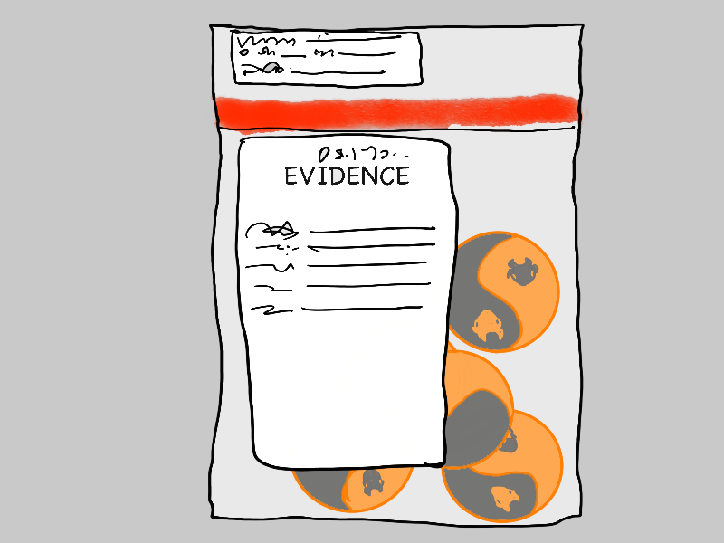

Infinity Gig
The call from Agent Guy Lestrode of the FBI G-Crimes division came at 3 in the morning, waking me from a particularly vivid apocalyptic corona dream.
"This is Lestrode. Agent Jopp needs you at a crime scene right away. Get dressed. I’ll pick you up in fifteen minutes. Wear a mask.”
“Wait, what…where? What time is it…it’s three in the morning!”

“I don’t know anything either. I’m bringing coffee. I guess we’ll both find out together.”
Fifteen minutes later, I was climbing into Lestrode’s car. He grinned at me through a KN-95 mask, and offered me a cup of gas-station coffee and an alcohol wipe.
“I already finished mine. Feel free to take off your mask and drink yours while we drive. We can drive with the windows down. ”
“Where are we going?”
“It’s about twenty minutes away, up in the hills somewhere.”
We drove in silence. I drained the tepid coffee in a few large gulps, and put my mask back on. Lestrode rolled the windows back up.
The route seemed oddly familiar.
“I feel like I’ve driven this way recently.”
“Yeah? Well, we’re almost there. Just one more right up there.”
I figured out why the route looked familiar just as Lestrode made the last turn. It was the street with the mansion where Gao, Anscombe, and I had met up with Khan[1] back in early March, just as the pandemic was starting.
It couldn’t be a coincidence. Could it?
I had my answer a couple of minutes later. Lestrode turned into the driveway of the exact same mansion where we’d had our meeting. A police cruiser and two unmarked vehicles were parked along the semicircular driveway.
“Shit, I’ve been here before. Back in March.”
It wasn’t a coincidence. What was going on? I hadn’t heard from Khan in months.
Agent Jane Jopp, the senior partner of the Jopp-Lestrode G-Crimes duo, met us at the front door.
“Rao says he’s been here before,” Lestrode volunteered.
Jopp didn’t seem surprised. “He does, does he? This way, both of you. I have to warn you, it’s not pretty.”
The cop at the front door held it open for us and nodded at Lestrode. We walked through the anteroom, past the dining room, past the skullduggery room where we’d had our meeting in March, down a long hallway, and into a large conference room.
Six bodies lay slumped in their chairs around one end of the long, rectangular conference table. Phones, tablets, papers, and half-empty wine glasses were on the table in front of each of them. Some had been knocked over. There were two wine bottles on the sideboard, one empty, one half full.
There was no mistaking the tall, powerfully built body slumped back in the chair at the head of the table, the head thrown back at an awkward angle.
It was Khan.
Ulysses Alexander Khan. Legendary former McKinsey engagement manager. Scholar, but no gentleman, of consulting.
“CSI is on its way, but looks like a mass poisoning. Probably the wine. We haven’t yet id’ed any of them. You recognize any of them?”
I nodded, and said carefully, “That’s Khan, the tall guy… Ulysses Alexander Khan… we’ve worked together a bit. I was here in March. How did you make the connection to me?”
“We found three packages in the anteroom addressed to you, your friend Gao, and somebody named Arnold…”
“…Arnie Anscombe?”
“Correct. So you know him?”
“The three of us were… exploring a new gig with Khan. Nothing’s panned out yet. Pandemic and all. But why is G-Crimes here in the first place?”
A new voice spoke from behind us, “That would be my doing. Hello again Mr. Rao.”
I turned around. It was Agent Q[2]. I still didn’t know his name, or which three-letter agency he worked for.
“Agent Q! Somehow I’m not surprised to see you here. Does this have something to do with the counterfeit yak coins thing you’ve been investigating?”
“Got it in one. Yes. We got wind of Khan in connection to some Covid-vaccine deals in Russia where a bunch of the fake coins turned up, and we’ve been watching him for the last month. We had this place flagged, so we got the alert when the butler called 911.”
Jopp said, “There was no other staff around last night besides the butler. He served the wine and left them to their meeting around midnight. When he came back to check half an hour later, they were all dead. Says he heard nothing.”
Agent Q said, “This mansion belongs to a Russian oligarch friend of Mr. Khan here. He was part of an organization we’re watching, it’s called The Club… heard of it?”
I opened my mouth to answer, then shut it again. This was starting to look dicey for me. Fortunately, I was saved by the bell. The cop from the front door popped his head into the conference room.
“The G-Crimes search team is here. CSI’s five minutes away.”
Jopp said, “I’ll get them started searching the grounds. Lestrode, you’re with me. Rao, look around, see if you can spot anything else or if you recognize any of the others. Don’t touch anything.”
Agent Q’s phone rang.
“I need to take this, excuse me.”
He stepped out into the hallway, leaving me alone in the conference room with the bodies.
I looked at the others. Four of them I didn’t recognize: all middle-aged men. Two white, one black, one Asian, probably Chinese. All four had a certain air about them that seemed familiar, but I couldn’t put my finger on it.
The fifth was a woman. An older woman, in a long, flowing dress, slumped face down on the table. I went around the table to try and get a better look at her face.
It was then that I recognized her. It was my long-time mentor, The Ancient One[3]. Veteran indie. Trickster. Rider of helicopters. Owner of one of the last known strategometers.
Her long sleeve was obscuring her wrist. Did I dare…?
I peeked quickly out into the hallway, it was empty. I scanned the ceiling. No obvious cameras.
I took out my pen, and carefully moved her left sleeve back. The strategometer was on her wrist.
I hesitated for a second, then made up my mind. Carefully, but quickly, I took it off her wrist and pocketed it.
In my defense, there are only about a dozen strategometers left in the world, and if it vanished into the evidence lockers of the G-Crimes division, it would be lost to the indie world forever. Besides, tradition has it that strategometers aren’t exactly passed down from indie to indie, but sort of…. ritually stolen, shall we say? By tradition, you’re supposed to tell the person you’re stealing it from the time.
“I guess it was your time, Ancient One,” I whispered into her lifeless ear, and stepped back around the table, just as Agent Jopp returned.
“Well, we are searching the area, and Lestrode is questioning the butler and looking at the security footage. You got anything else for me, Rao?”
“I’ve met the woman a few times over the last decade…I don’t know her name, but everybody called her The Ancient One.”
“The Ancient One? What is this, some sort of LARP?”
I shrugged. “You meet some odd people in this line of work. She was well-connected. Top-tier indie. Involved in lot of deals in Asia and Europe. Secretive. Flew around in helicopters. Expect-me-when-you-see-me sort of person.”
“What about the other four men?”
I frowned, “I don’t recognize them, but there’s something familiar…”
Then it hit me.
“Bainies! They’re Bainies. I didn’t recognize them without their hoods and cloaks[4], but that haircut is unmistakeable. Plus the fact that they’re getting haircuts during Covid. But they’re not wearing their shareholder-value-maximizer bracelets, so I’m guessing they’re ex-Bainies.”
“We’ll follow up on that. So we’ve got an ex-McKinsey guy, a bunch of ex-Bainies, and a mystery indie consultant who called herself The Ancient One? Great.”
Footsteps sounded in the hallway.
“That must be CSI. Let’s head over to the library. Q said he’d meet us there.”
Lestrode was just wrapping up with the butler when we entered the library. I recognized him. It was the same butler who had let us in back in March. He didn’t seem to recognize me.
“Hang around for a bit, I may want to talk to you some more,” Lestrode told him, as he left the library.
Jopp and I settled into armchairs.
“Get anything from the butler?”
“He swears he personally cut the foil and uncorked the bottles and cleaned the glasses before the meeting. Says he didn’t see anyone else besides the people at the meeting.”
“Can he identify the others?”
“No, but he says the group has met here a few times since June. And that Khan once referred the group as the Potsdam group.”
Jopp frowned. “Potsdam? As in the failed post World War 2 conference that started the Cold War?”
Lestrode said, “I did get something off the security cameras though. Took a picture of the screen with my phone, we’ll get the files later. But it’s pretty clear. This was a few minutes after midnight.”
He handed Jopp his phone. Jopp frowned, then looked at me, hesitated, then handed me the phone.
“Anyone you know?”
It was a picture of a picture, but perfectly clear. My hands went slightly clammy.
It was a face I had only seen once a decade ago. A face I wasn’t sure was real. The face of the Bhutanese monk who had given me my first two yak coins a decade ago[5], when I was first getting started as an indie consultant. He was looking straight up at what must have been the front-door camera, with a serene expression. He was dressed in a western-style suit, but it was him alright. You don’t forget people who do magic disappearing acts in front of your eyes.
I frowned and squinted, thinking furiously. How much should I share? Just how entangled was I already, in every aspect of this mess?
“Not sure. I don’t think so. Didn’t the butler say nobody else came in or out?”
Lestrode said, “Maybe one of the meeting attendees let him in.”
Jopp said, “Looks Thai. Or Burmese maybe.”
“Bhutanese,” said a voice. Agent Q had joined the conversation unnoticed. He had an unsettling way of doing.
He was carrying a small plastic crate, with a bunch of packages and boxes inside it. He put it down on the floor and stretched a hand out towards me. I handed him Lestrode’s phone.
“Is that the package addressed to me on the top of the crate there?” I asked.
“Yes, and several other very interesting things I found in the skullduggery room. Sorry, but you’re going to have to wait a while for your package Mr. Rao.”
Jopp interrupted, “Bhutanese? You don’t seem to be guessing.”
Agent Q was looking at the phone and nodding knowingly.
“I’m not. Our friend here has been seen all over the world in the last decade, but especially in the last few years. Comes and goes. Has an uncanny way of being somehow around when the murkiest deals are going down. We call him the monk. The only thing we’ve been able to figure out about him is that he’s Bhutanese.”
“What is he, some sort of deal-maker? PLA agent?”
“We thought he was a PLA agent too initially, but it doesn’t seem likely. He never seems to be actually involved in any deals. And he’s definitely not one of my… ahh… Chinese peers, look at how he’s staring at the camera. But if anything big is going down in the global gig economy, I’ve come to expect him at the scene. Doesn’t bother to hide his presence, and there’s always a few people who recall seeing him or even speaking with him. But we can never find him afterwards either. We think he’s from the Order.”
Lestrode said, “You mean the Order of the Yak? I thought that didn’t exist anymore?”
Agent Q shrugged. “Well, let’s just say the yak… motif… seems to show up wherever the monk shows up.”
He turned towards me. “Maybe Mr. Rao can help us out here. Weren’t you in Bhutan a few years ago Mr. Rao? I seem to recall you writing about that in your newsletter? And I hear you’re involved with a new yak organization….”
“That’s the Yak Collective! Nothing to do with any of this! We just took some naming inspiration from the Order, which of course is just ancient history. And you all know my newsletter is half fiction! Surely you don’t believe all that crap about actual yaks and vanishing monks!”
“But you really were in Bhutan in 2011 weren’t you? Are you sure you haven’t seen this man before?”
He thrust the phone towards me again. A subtle change had come over his face. Jopp and Lestrode were looking at me strangely as well.
Suddenly, I realized I was being interrogated. And not too subtly either.
“I swear I haven’t seen him. Why would I hide it if I had?”
“I don’t know. But on a different topic, we were talking about The Club earlier when we were interrupted. What about that? Khan ever talk to you about that?”
I decided it was time to show more of my cards. A record of cooperation would be good if this thing went sideways.
“Yes,” I replied. “In fact that’s what Khan was trying to get us hooked up with. He said the Club was a group of high-net worth individuals who wanted to revive the Order of the Yak, and would support us doing so. That they’d send gigs our way.”
“Hmm, did he say why? Or what they wanted?”
“No. Everything fell apart with Covid. We haven’t heard much from him since the initial meeting in March.”
“Have you done any work for the Club? Any paid gigs?”
“Not that I know of,” I said truthfully. “Of course I can’t tell if they had a hand in lining up any of my recent gigs, but I don’t think so.”
“What about your friends, Gao and Anscombe?”
“You’d have to ask them, but I don’t think so.”
“We will. What do you think might be in these packages Khan was going to mail you?”
“I honestly don’t have the faintest idea. You’ll have to open them and look.”
Agent Q paused and looked at me appraisingly, then seemed to come to a decision. He sat down in an armchair and pulled the crate towards him.
“Quite a few things here of interest. Besides the unmailed packages we have here a large box of fake yak coins,” he pulled it out, set it on the coffee table, and threw the lid back. It was, as he said, a pile of yak coins. I picked one up and examined it.
“Yeah, these are fake,” I said, and put it back.
Agent Q looked at me but said nothing, then reached back into the crate and pulled out a smaller box.
“…and more interestingly, this smaller case of what appear to be real ones.”
I was eager to continue cooperating where it couldn’t hurt.
“Yeah, I recognize that second box. He gave the three of us coins from it back in March. They were genuine.”
He looked at me, and again said nothing.
“Finally,” he said, pulling out a thin folder, “We have here, a folder labeled Potsdam.”
Lestrode spoke up, “The butler said this group was called the Potsdam group. What’s in the folder? Is the Potsdam group the Club?”
“Perhaps. There is just a single sheet of paper with a list of names and 32-digit hexadecimal numbers in this folder. Encrypted identifiers I’m guessing. We can have the cryptanalysis team take a crack at it.”
I decided to brazen it out. I was either a suspect, or part of the team. There was only one way to find out.
“Is my name on it? Khan never mentioned this Potsdam thing to me.”
Agent Q looked up at me, “These look like code names. Greek gods. Prometheus, Zeus… mean anything to you?”
I shook my head.
Lestrode looked at me and smiled cheerfully. Maybe I wasn’t a suspect after all.
Jopp looked at me and nodded, in a not-unfriendly way, and nutshelled the situation.
“Well, it looks like we have a lot to go on. Six bodies, a clear photo of this monk character. This Potsdam list, fake and real yak coins… and I am guessing CSI will be able to get us something once they run a tox screen on the wine and look at all the papers and phones in the room.”
Agent Q looked at her with an undecipherable look. “I wonder…” he said.
Before Jopp could continue with her overview of the mise en scene, there was an interruption. One of the CSI techs walked in.
“We’re still photographing everything, and we’ll get the stuff to the lab as soon as we can, but we thought you’d want to see this now. We found these coins, one clenched in each of the victims’ right fists.”
He placed a small evidence bag containing 6 antique looking coins on the coffee table, and stepped back. We all looked at each other, then leaned in to peer at the bag.
They were yak coins, but unlike any I’d seen before, real or fake, and quite a bit larger. Each was a bimetallic disc in the form of a yin-yang. Except, instead of a circle, each of the fish-like halves had the head of a yak for an eye.
I looked up to find Agent Q staring at me.
“Looks like these are new to you as well, Mr. Rao,” he said.
He picked up the bag and handed it back to the CSI tech. “Put a rush on these, would you?”
The tech nodded and headed out of the room. Agent Q stood up, but the boxes back into the crate, and picked it up.
“Well, I’d better get to work on these. You’ll let me know if you find anything else Jane?”
Jopp nodded, “I guess we’ll be done here pretty soon as well.”
Agent Q walked to the door, then paused, and turned around to look at me.
“And Mr. Rao….”
“Yes?”
“Don’t leave town for the next few weeks.”
- where Gao, Anscombe, and I had met up with Khan — and_so_it_begins.html
- Agent Q — the_two_shadows_of_the_hero.html
- my long-time mentor, The Ancient One — making_it_interesting.html
- without their hoods and cloaks — index.html
- given me my first two yak coins a decade ago — the_shadow_s_journey.html